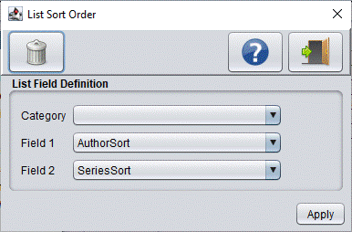

List is a simple to use database that uses two custom fields and a large notes field. The beauty of List is that you can organize your database records by Category. Unfortunately the Palm Pilot Database structure limits the total number of user definable Categories to 15. All records that don't fall in these 15 Categories will be assigned to the default Palm "Unfiled" Category.
DBConvert and FNProg2PDA allows you to assign individual database fields of the original database to the List Category, Custom Field 1 and Field 2.